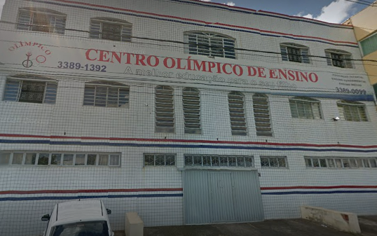
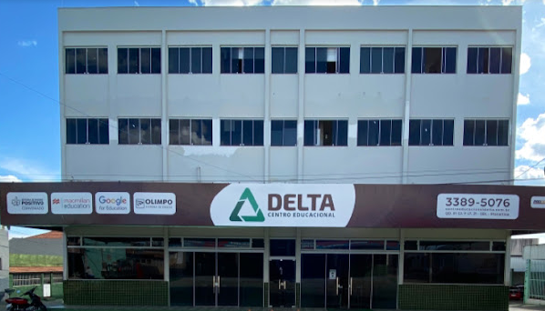
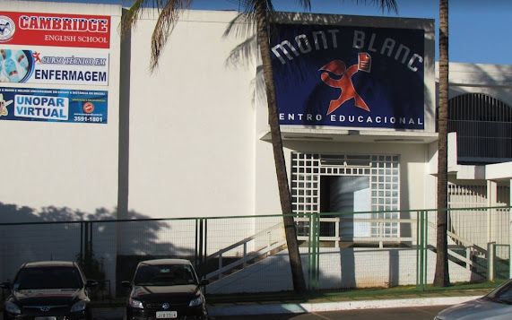
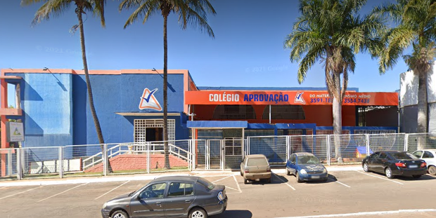
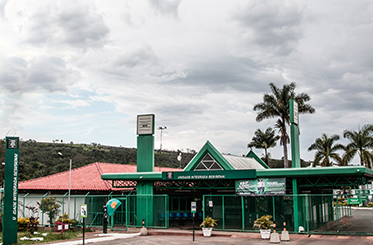
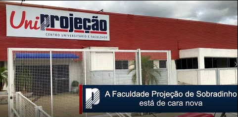

No começo da minha trajetória como aluno, estudei primeiro na escola Centro Olímpico em Planaltina DF, até o meu 5º ano.

Logo depois que saí de lá, entrei na escola Delta, em Planaltina mesmo. Onde fiquei até meu 7º ano.

Saí do Delta e fui para o Mont Blanc (que hoje em dia é o Aprovação), em Sobradinho. Lá fiquei até o começo do meu ensino médio.

Entrei para o SESI Sobradinho, onde concluí todo meu ensino médio com formação técnica em ciências da natureza.

Atualmente estou estudando na faculdade Projeção, onde estou cursando TADs (Tecnologia em Análise e Desenvolvimento de Sistemas). Agora finalmente entrando no segundo semestre.
